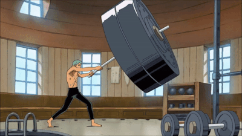

Guia do Sistema
Olá! como eu ja havia dito antes eu sou o Sistema, fui criado para auxiliar em sua jornada. Acessei suas memórias, e estarei me manifestando como a ciência do seu mundo chamada de tecnologia para facilitar sua compreensão enquanto quantifico e traduzo as informações de Gaia para você.
Primeiro vamos te apresentar as funcionalidades. Existem oito Sessões principais: Pagina Principal, Guia do Sistema, Missões, Mural de Informações, Manuais e Complementos, Área do Jogador, Loja do Sistema e Registros das Sessões.
Na Pagina Principal você ira encontrar uma breve introdução da historia, inserindo o(a) jogador(a) ao cenário da campanha.
O Guia do Sistema é um banco de dados onde o(a) jogador(a) pode acessar informações importantes que podem ser de grande utilidade caso se encontre com alguma duvida.
A sessão Missões Fica arquivado as missões em andamento do(a) jogador(a) com algumas informações que podem ser consultadas a qualquer momento.

O Mural de Informações é um local reservado para notas e recados off-game. Como datas das sessões, mudanças de horas e dias das sessões, adiamentos, etc.
Aqui você terá acesso aos links dos Manuais e Complementos caso seja necessário fazer uma consulta ou pesquisa. E para que não tenha conflito entre as versões dos manuais que tem disponíveis na internet criarei uma biblioteca.
Na Área do Jogador estarão as informações relacionadas ao personagem, estatísticas e sua evolução.
A Loja do Sistema é como o nome sugere, é uma loja onde você poderá comprar vários tipos de coisas usando pontos de XP como moeda de troca.
E por ultimo temos a sessão de Registros das Sessões Um espaço reservado para documentar algumas informações importantes dos acontecimentos e ações dos jogadores que impactaram e podem gerar mudanças ou reações em cadeia.
Criando Personagem
Agora vamos começar a criação de personagem.
Com a bênção da centelha divina seu corpo transcendeu os limites do corpo humano comum, no momento você pode não sentir muita diferença, mas se cultiva-lo de forma correta quem sabe você também não se torne alguém extraordinário...
Você terá um corpo novinho em folha e poderá cria-lo conforme sua vontade. Mas já vou avisando... Qualquer modificação que não tenha nenhum custo não passará de estética e não dará nenhum tipo de vantagem, até que o jogador(a) invista pontos de xp, ou seja, para habilitar qualquer habilidade, vantagem ou poder será preciso pagar um custo equivalente/proporcional ou que ja esteja estipulado no manual alpha.
Seu(sua) personagem poderá ter de 18 à 20 anos. Em seguida você terá que escolher qual caminho de evolução irá seguir: O caminho do guerreiro, o caminho da sabedoria, o caminho do divergente ou o caminho do protetor.
O caminho do guerreiro: Aura (resistência X 6), mana (resistência x 3) e pontos de vida (resistência x 5).
O caminho da sabedoria: Aura (resistência X 2), mana (resistência x 7) e pontos de vida (resistência x 3).
O caminho do divergente: Aura (resistência X 4), mana (resistência x 4) e pontos de vida (resistência x 3).
O caminho do protetor: Aura (resistência X 5), mana (resistência x 2) e pontos de vida (resistência x 7).
Conforme o(a) Personagem for ficando mais forte, seu caminho irá evoluir e se aperfeiçoando desbloqueando novas vantagens e habilidades.
Distribuindo os Pontos: Você terá 5 pontos para distribuir na sua ficha.
Você também poderá ter até duas desvantagens podendo receber até
2 pontos, por duas desvantagens de -1 ponto ou uma desvantagem de -2 pontos. Assim podendo somar até 7 pontos no total para distribuir na ficha.

Sobre o Sistema
O Sistema é a personificação do poder da centelha divina na forma de um sistema de jogo para ajudar na compreensão do(a) jogador(a) e auxilia-lo(a) no uso de suas habilidades e quantificar os parâmetros das suas estatísticas gerais.
Por mais que seja uma energia extremamente poderosa que está ligada à origem de tudo, o Sistema não terá uma consciência.
Você deve está se perguntando por que diabos você iria querer acessar o Sistema durante uma batalha...
Dentre suas inúmeras funções, existe a Loja do Sistema. Através do poder divino acumulado, que foi quantificado como pontos de xp, O(a) jogador(a) poderá ter acesso à diversos itens, equipamentos, habilidades e poderes exclusivos que somente uma divindade poderia ter acesso.
Mas para tudo existem regras, ainda mais com poderes divinos... primeiro de tudo, o tempo vai continuar normalmente enquanto estiver acessando o Sistema, isso quer dizer que por estar dividindo sua atenção, seu tempo de reação diminui resultando em uma penalidade de - 1 nos testes. Outra regra é que para comprar um item exigem 3 ações: abrir o Sitema, selecionar o item e por fim, comprar o item; o que equivale à 3 turnos para finalizar todo o processo.
(OBS: Caso o item comprado seja para outro jogador será adicionado mais 1 turno como penalidade, que seria a ação de entregar o item)
O(a) jogador(a) poderá interagir com o Sistema canalizando sua vontade e usando seus pensamentos para selecionar uma ação.
Seria como se existisse uma ficha de RPG na sua mente e que você pudesse acessa-lo e configura-lo a qualquer momento... isso mesmo, a qualquer momento, mesmo durante a batalha.
Usando Ponto de XP
Os Pontos de XP é o acumulo de poder divino que foi cultivado ao fazer ações que levam o seu corpo e mente ao limite, deixando-os ainda mais forte. Imagine os pontos de xp como uma moeda de troca muito poderosa, que será usada para diversas funções no sistema.
Aumento de atributos: Por ser considerado uma energia o pontos de xp pode aumentar as estatísticas do seus atributos pagando um custo estipulado pelo sistema para cada nível.
Evoluir maestria: Pagando um preço estipulado para cada nível de evolução, você poderá aumentar o rank das suas habilidades, técnicas e poderes; Aumentando seu domínio sobre elas e elevando seus bonus e efeitos.
Aumento de atributos: Por ser considerado uma energia o pontos de xp pode aumentar as estatísticas do seus atributos pagando um custo estipulado pelo sistema para cada nível.
Comprando vantagens: Usando o manual alpha como base o(a) jogador(a) poderá adquirir vantagens caso tenha o uqe é preciso. Agora irei explicar como os pontos de xp serão calculados, 10 pontos de xp equivale a 1 ponto no manual
(10 XP = 1 Ponto).
Comprando na Loja do Sistema: Todos os itens vendidos usarão pontos de xp como moeda de troca.
Habilidades e Perícias
Existe uma grande diferencia entre habilidades e perícias. As perícias podem ser adquiridas com tempo e esforço, assim como um jovem aprendiz de ferreiro com décadas de práticas se tornará um mestre ferreiro. Resumindo é algo que um humano consegue alcançar apenas com seu esforço, mas não subestime um mestre perito, isso pode te trazer à ruína. Os mestres peritos estão no topo da humanidade considerada comum, isso é um fato... mas e se alguém transcender esse limite?
É ai que entram as habilidades, o resultado de um mestre perito que superou os limites dos humanos e sua perícia se tornou uma habilidade. Semelhante à magia, exigiria um determinado custo de energia ao ativar uma habilidade mas seus poderes e efeitos serias algo extraordinário comparado com as perícias.
Perícias podem ser adquiridas no Sistema ou através de mentoria fazendo um teste.
Existindo um rank de classificação que determina o nível de proficiência do perito: F, E, D, C, B, A, S e SS;
O nível de proficiência influência diretamente no resultado quando dois mestres se confrontam usando suas perícias ou habilidades.
Um exemplo seria um caçador perito em [Rastreio E] com PC (Poder de Combate) de 20 contra um ladino perito em [Furtividade C] com um PC de 15, claramente o poder geral do caçador é maior, ou seja, considerando apenas os atributos ele seria bem mais forte que o ladino.
Porém podemos ver que a [Furtividade C] do ladino é dois ranks acima que o [Rastreio E] do caçador, quando existe uma diferença muito grande nos ranks das perícias, a não ser que seja algo ligado a batalha ou tenha outros fatores influenciando, geralmente a perícia de rank maior se sobrepõe a de rank inferior mesmo que o PC do adversário seja maior.
Poderes e Técnicas
Existem muitas formas de adquirir Poderes e Técnicas, mas as mais comuns serão através do Sistema ou por mentoria de um mestre. A primeira opção é mais simples, contanto que tenha pontos de xp suficientes poderá comprar na Loja do Sistema ou completando as missões do sistema e adquirindo através de recompensas.
Já a segunda opção é conseguindo convencer algum mestre a passar seus conhecimentos e você terá a chance de aprender por meio de um teste.
Os ranks são os mesmos usados para classificar as perícias e habilidades: F, E, D, C, B, A, S e SS; E a dificuldade do teste vai variar dependendo do rank do poder ou técnica que será aprendido.
Sistema de Batalhas
Durante as batalhas será usado as regras do sistemas 3D&T, o crítico será caso o(a) jogador(a) obtenha um resultado 6 no teste de dano ou armadura.
Por exemplo: O(a) jogador(a) acertou o teste para atacar e quando for rolar o dado para determinar o dano, se o resultado for 6 será considerado como um crítico dobrando seu valor para 12.
O mesmo se aplica ao teste de armadura, caso o resultado seja 6 quando o(a) jogador(a) rolar o dado para armadura, o resultado também será considerado crítico e o valor será dobrado.
Também será implementado uma medida para calcular parcialmente a força de luta: Poder de Combate ou apenas PC. Que será determinado através da soma dos atributos força, armadura, ponto de fogo e resistência multiplicados pelo atributo habilidade (F + A + PdF + R X H = PC) ignorando perícias, habilidades, poderes e
técnicas.
Por isso é um calculo parcial já que não leva em conta outros fatores além dos atributos gerais.
Para ataques de longo alcance e movimentação, será aplicado o calculo de 5Mt para cada ponto do atributo usado para a ação e no caso da movimentação serão 3Mt para cada ponto em habilidade e quando chegar em H6 terá um bonus de +2 somando um total de 20Mt de movimento. E quando alcançar H5 ou maior terá uma ação extra por turno somando 2 ações por turno, podendo acumular com outros bonus.

O Mundo de Gaia
Gaia é como qualquer outro mundo de fantasia cheio de magia e criaturas lendárias. sua escala é 10 vezes o tamanho do planeta Terra, ou seja, tem muito o que explorar em Gaia.
Por ser um mundo com um mana extremamente denso e abundante, a ciência seguiu um caminho diferente da Terra explorando ciências como alquimia, magia, aura, etc...
Em contraste o nível tecnológico é extremamente baixo e quase inexistente por falta de interesse dos pesquisadores ou mesmo dificuldade de conseguir investimentos em projetos pioneiros.
Por ter um mana extremamente poderoso, a maioria das criaturas em Gaia são Bestas de Mana, criaturas que de alguma forma aprenderam a suar o mana e evoluirão se tornando adversários temíveis para pessoas desavisadas.
A raça humana é a de maior numero populacional, e pode ser encontrada facilmente em quase todos os reinos e impérios. Mas nem todos os lugares são recetivos para humanos, no continente demoníaco e no reino dos elfos, os humanos não são bem vistos e muitas vezes são feitos de escravos senão mortos por motivos banais sem qualquer interferência.
Fora as raças que ja conhecemos, em Gaia podemos encontrar também seres da raça demoníaca que variam em suas aparências com alguns semelhantes à humanos enquanto outros se parecem mais animalescos. E existe também a raça dos demi-humanos, seres humanoides com características de animais e uma leve semelhança com os humanos.
Loja do Sistema
Uma das funções mais importantes do Sistema, senão a mais importante. Aqui você vai poder usar seus Pontos de XP para diversas coisas como aumentar seus atributos e o rank das suas perícias, habilidades e poderes. E também poderá comprar a [Caixa Presente Aleatório], um item exclusivo do Sistema.
A [Caixa Presente Aleatório] ao ser ativada ela invocará uma recompensa que pode ser algo muito comum à algo bastante valioso de forma randomizada. E o rank da [Caixa Presente Aleatório] vai influência diretamente na taxa de queda de recompensas de alto rank, ou seja, quanto maior o rank da [Caixa Presente Aleatório] maior a chance de cair algo extremamente valioso.
Na [Caixa Presente Aleatório] também podem conter itens, equipamentos, poderes, técnicas, etc. Itens exclusivos de varias dimensões que só poderão ser adquiridos através do sistema.
Plataformas Auxiliares
Um espaço reservado para outras plataformas e ferramentas que iremos usar durante as sessões. Lá conterá os link para facilitar o acesso e uso.
Olá eu sou o GM, estou desenvolvendo esse projeto web para poder melhorar meu conhecimento, mas também estou criando para poder trazer uma imersão um pouco diferente na nossa experiência de jogo.
Esse é o meu primeiro projeto, então peço a compreensão caso ainda tenha algumas falhas para corrigir.
A pagina ainda está em desenvolvimento, mas como eu tenho outros projetos, vou subir essa pagina e conforme eu vou concluindo o projeto irei atualizando a pagina.
Também gostaria de saber a opinião de vocês, se puderem me dar um feedback ficaria muito grato. Sem mais delongas, espero que aproveitem a pagina.